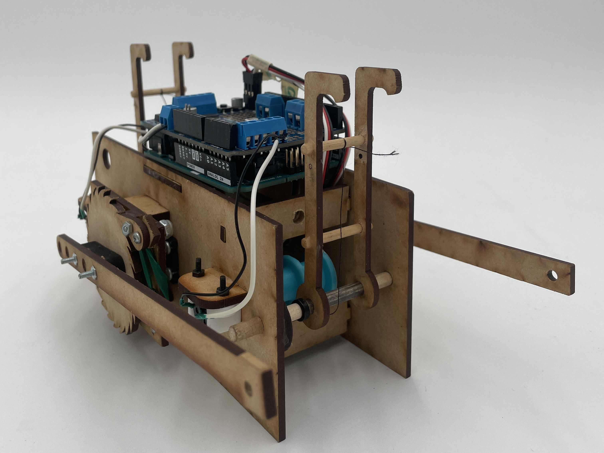
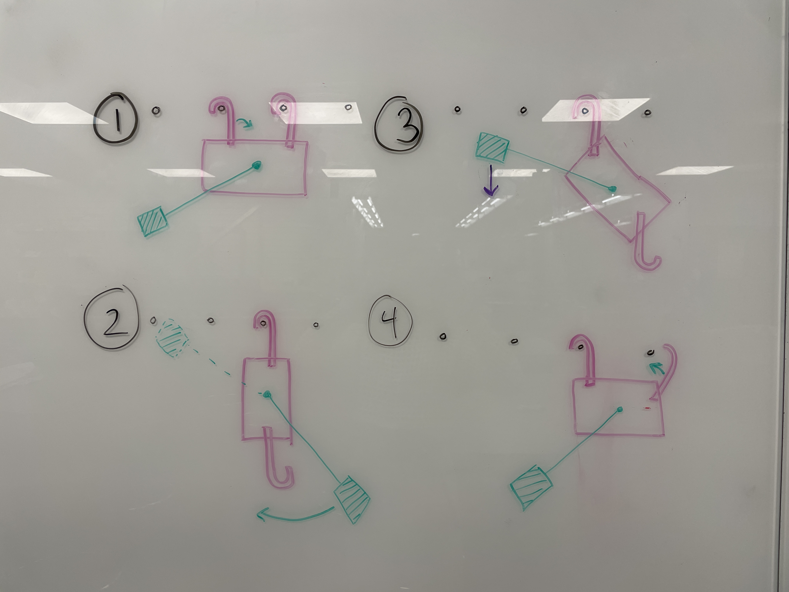

IDEA170
Bio-Inspired Locomotor
In this final project, I worked with a group of 4 over 6 weeks to create a biologically-inspired locomotor. Taking inspiration from gibbon apes, our goal was to travel across a horizontal ladder by swinging between rungs.
Our design was constrained to the use of 2 continuous rotation motors and 2 servo motors. Understanding how gravity and momentum affected our system as it moved was essential to reaching our design goal.

On the Whiteboard

1) We fitted the ends of the gibbon arms with hooks facing the same direction. In order to move laterally across the rungs, one arm disengages, leaving the other attached. The entire system rotates around the joint and the detached arm can swing back up to grab the next rung.

2) To control the movement of the arms, we attached each to a continuous motor. A spool attaches a string to the rotating motor that pulls or releases the arm.

3) When one arm is released, the entire system becomes vertical. In order to get the detached arm back up to rung-level, we had to shift the overall center of gravity to the opposite side.
Components
Arms
Motor Spool
Electronics
Main Gear

Laser cut from MDF, the gibbon arms were attached to the body using a dowel to allow for rotation.
Hooked ends prevent the system from accidentally sliping off the ladder rungs.

The spool that winds the arms is a 3D printed part.
The string is threaded through a hole in the center of the spool and a screw in the attaches it to the motor shaft.

We used an Arduino to communicate between the moving parts.
When pressed, a lever arm switch activates the motors to start winding the spools controlling the arms.

The main gears attach the weighted arms to a servo motor.
To sync the movements of the gears on either side of the system, the motors rotated at the same speed but in opposite directions.
Problem Solving
As I mentioned, gravity and momentum were central considerations of our iterative process. While these forces required us to add components to address their effects, they also inevitably added extra weight.
To return the system to a horizontal position after disengaging one arm, we needed to add a counterweight that shifted the system's center of gravity. We attached a long arm to the main gears that rotated the counter weight into position. To prevent unwanted rotation, we had to add one weight to either side of the gibbon.
The image below shows how:
(a) The counterweight keeps the system level as
(b) one arm stays attached and
(c) the other arm hangs free

With the weight of the gibbon and the added counterweights, the servo motors kept slipping backward while trying to rotate the attached weight.
To address, this I designed a ratchet and pawl to limit the gear's rotation to one direction. This allowed the counterweight arm to lock in place incrimentally as the motor turned.
Assisted Demo
The counterweight in combination with the ratchet and pawl successfully redistributed the system's weight to a position where the detached arm can connect with the next rung.
In this assisted demo, you can see the gibbon remains locked in position without backward rotation even when I let go.
Ultimately however, the gibbon was not able to perform this movement unassisted because the motor could not rotate the counterweight arms enough to achieve the center of balance required.